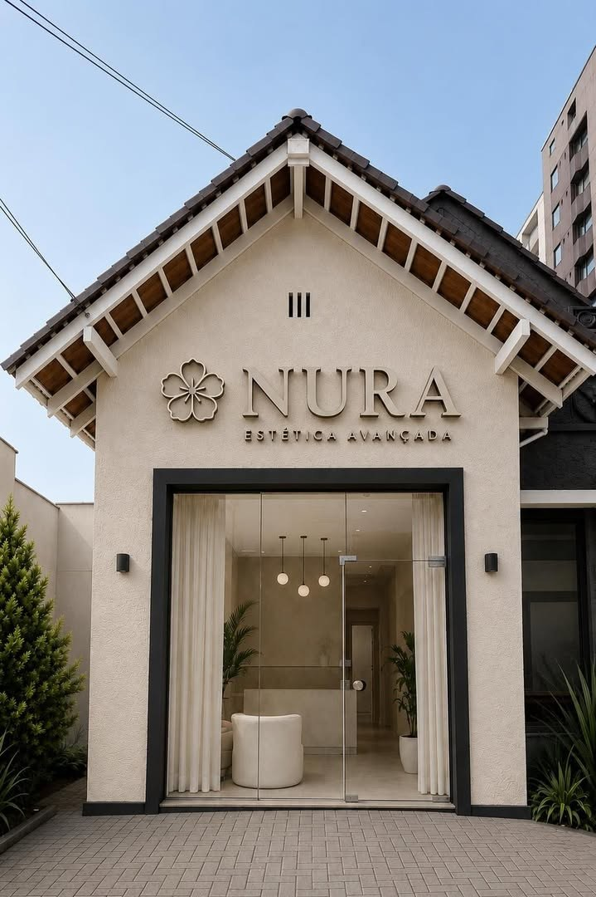
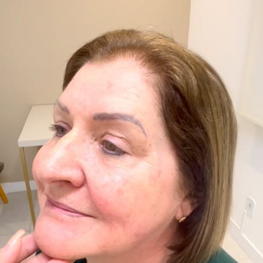
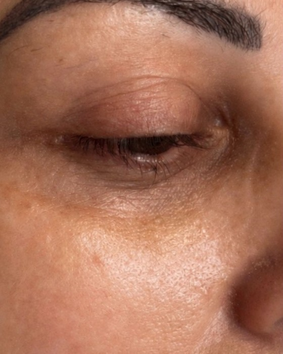
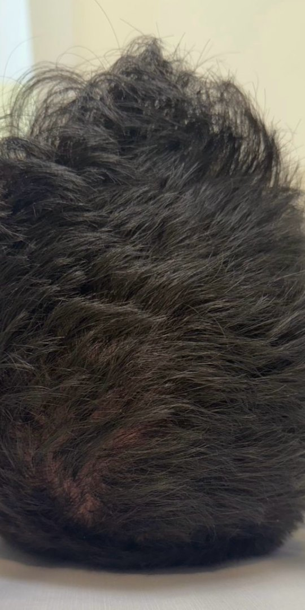

“Um resultado que vai além do que vemos no espelho.”
Pele madura · depoimento em vídeo no InstagramEstética Regenerativa · Centro de Joinville
Estética facial e corporal com planejamento individual, naturalidade e cuidado em cada detalhe. Primeiro avaliamos. Depois, definimos o que realmente faz sentido para você.

Seu rosto não precisa de uma receita pronta. Precisa de um planejamento feito para você — que respeite sua anatomia, suas expressões e aquilo que faz o seu rosto continuar sendo seu.
Naturalidade também é resultado.
Antes & depois
Pacientes reais da NURA, imagens autorizadas.
Tratamentos



Não sabe qual escolher? A avaliação indica o caminho.
O método NURA
Antes de pensar em qualquer procedimento, buscamos entender onde o seu rosto está envelhecendo e o que ele realmente precisa.
Entendemos onde está a queixa, como ela se apresenta e quais fatores podem estar mantendo a condição — da pele às estruturas mais profundas.
Não existe uma quantidade ou um protocolo que funcione igual para todo mundo. Definimos onde, quanto e por quê.
Técnicas aplicadas nos pontos certos, para suavizar o que incomoda mantendo movimento, expressão e naturalidade.
Mais do que tratar, construímos um plano que considere a manutenção dos resultados ao longo do tempo.
Pré-avaliação · 30 segundos
Responda três perguntas rápidas e envie direto para o WhatsApp da NURA. Sem compromisso.
1/3 O que mais te incomoda hoje?
Pode escolher mais de uma opção.
2/3 Você já fez algum procedimento estético?
3/3 Qual período é melhor para você?
Sua pré-avaliação está pronta
Enviar no WhatsApp →Quem cuida de você
Um bom preenchimento não é sobre colocar mais. É sobre saber onde, quanto e por quê.
Na NURA, cada aplicação começa com uma avaliação individual. A proposta é suavizar o que incomoda, devolver estrutura e melhorar a qualidade da pele — preservando o movimento, a expressão e a naturalidade.
18 avaliações no Google
“Um resultado que vai além do que vemos no espelho.”
Pele madura · depoimento em vídeo no Instagram★★★★★Atendimento incrível! Me senti muito acolhida e tudo muito bem explicado… amei! Yali é uma ótima profissional! Maravilhosa! 🫶
★★★★★A doutora Yali foi muito atenciosa e tirou todas as minhas [dúvidas] antes do procedimento. O resultado ficou excelente, voltarei com certeza!
★★★★★Fiz minha primeira sessão de tratamento capilar e já notei diferença.
★★★★★Excelente atendimento, muito organizado e os valores acessíveis. Parabéns e sucesso. Tenham certeza que eu voltarei mais vezes e irei recomendar.
★★★★★Atendimento maravilhoso na recepção e com a Dra. Yali Carvalho ❤️
★★★★★Amei os tratamentos! Super indico.
★★★★★Profissional maravilhosa, a clínica é ótima!!
Porque cada rosto tem uma anatomia, uma proporção e uma necessidade diferente. Na avaliação entendemos a sua queixa e definimos o que realmente faz sentido — em vez de seguir uma receita pronta.
Botox não é sobre paralisar o seu rosto. Quando aplicado de forma estratégica, suaviza as marcas que incomodam mantendo a naturalidade e o movimento. Menos marcas, mesma expressão.
Preencher não precisa significar transformar. Trabalhamos contorno onde precisa, volume na medida certa e proporção sem exageros — para você continuar se reconhecendo.
Em muitos casos, sim. Quando o produto migrou ou o contorno ficou comprometido, antes de preencher de novo é preciso respeitar a anatomia e corrigir com estratégia. A avaliação diz qual é o caminho.
Melasma não é só uma mancha: pode envolver profundidade do pigmento, fatores hormonais, radiação, genética e inflamação. Por isso o tratamento começa com diagnóstico e inclui um plano de controle e manutenção.
Na Rua Lages, 570, no Centro de Joinville (SC). Agendamentos pelo WhatsApp (47) 98816-4006.
Visite a NURA
Estamos na Rua Lages, 570, no Centro de Joinville. Agendamentos pelo WhatsApp.